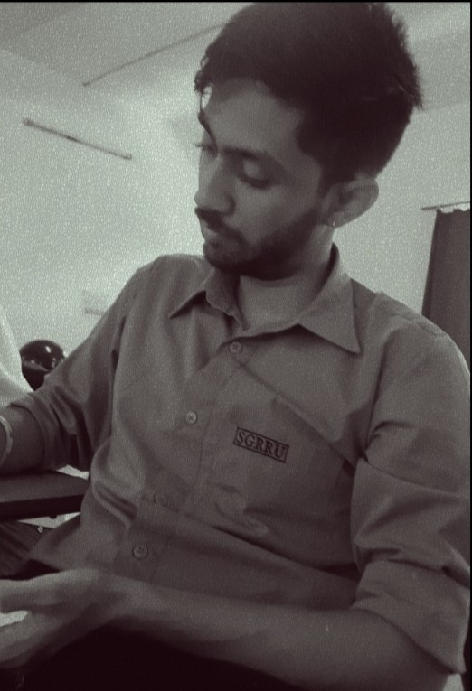

Welcome to my portfolio
I'm Aman Walia, a skilled and experienced problem solver with a strong academic background and a passion for technology.With a Master of Computer Application Degree and a Bachelor of Science in Information Technology from Shri Guru Ram Rai University, I possess a solid foundation in computer science. I'm proficient in a range of programming languages, including HTML, CSS, JavaScript, and Python, as well as web development frameworks like Bootstrap and React.I have experience working on projects involving credit card fraud detection and have also tutored students in various subjects. My strong communication and interpersonal skills make me a valuable team player.My recent project, a responsive Spotify clone app, showcases my ability to combine my passion for music with my technical expertise. This project demonstrates my commitment to creating user-friendly and engaging experiences.
About me
I am a skilled and experienced problem solver with a strong academic background and a passion for technology. I hold a Master of Computer Application Degree from Shri Guru Ram Rai University in Dehradun, as well as a Bachelor of Science in Information Technology from the same university. I am proficient in a variety of programming languages, including HTML, CSS, JavaScript, and With Basic knowledge of Python,React and Java and I am also well-versed in web development frameworks like Bootstrap. I have a experience working on projects involving credit card fraud detection. I am also a skilled tutor, having provided instruction to students in various subjects. In addition to my technical skills, I possess strong communication and interpersonal skills, making me a valuable team player. My recent project, a responsive Spotify clone app, showcases my ability to combine my passion for music with my technical expertise. This project demonstrates my commitment to creating user-friendly and engaging experiences. Overall, I am a highly motivated and capable individual with a strong foundation in computer science and a passion for innovation. I am always eager to learn new technologies and take on new challenges. I am an ideal candidate for roles that require technical expertise, problem-solving skills, and a commitment to delivering high-quality results.
My projects
-
Project 1
Responsive Music App loaded with default playlist.

-
Project 2
Clone of Landing Page of Netflix using HTML and CSS only.

Get in touch
This is a brief description of how to contact me.